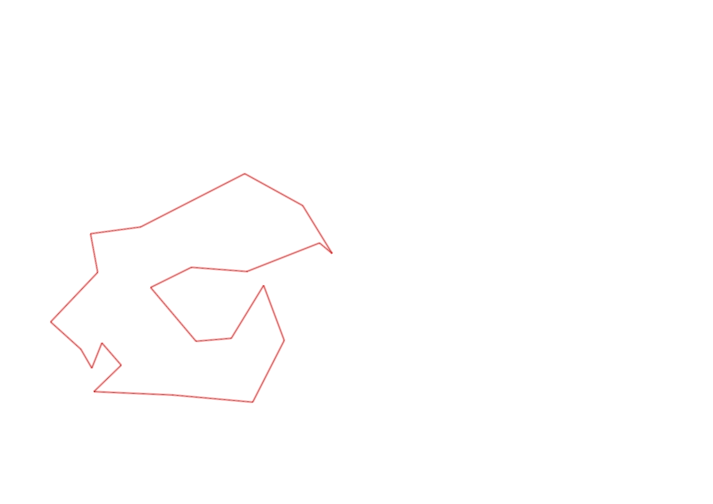
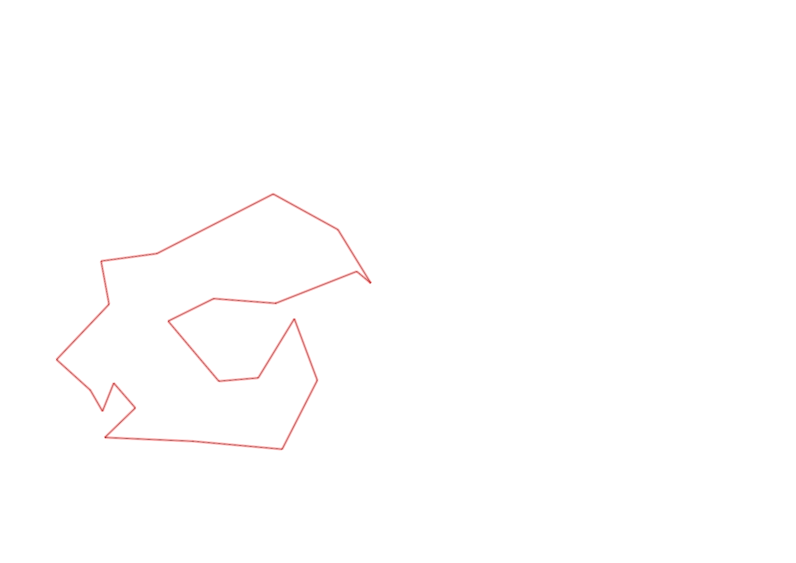

| Control |
Points |
Time Punched |
Distance |
Your Time |
Pace |
Place |
Fastest Time |
Median Time |
% Behind Fastest |
| 92 |
90 |
|
0.23 |
0:02:26 |
10:34 |
4 / 11 |
0:02:15 |
0:02:35 |
8% |
| 35 |
30 |
|
0.05 |
0:01:55 |
38:20 |
6 / 12 |
0:01:31 |
0:01:55 |
26% |
| 57 |
50 |
|
0.17 |
0:05:15 |
30:52 |
1 / 1 |
0:05:15 |
0:05:15 |
0% |
| 107 |
100 |
|
0.2 |
0:03:36 |
18:00 |
17 / 21 |
0:00:00 |
0:02:52 |
-% |
| 63 |
60 |
|
0.35 |
0:02:40 |
07:37 |
8 / 18 |
0:01:59 |
0:02:42 |
34% |
| 32 |
30 |
|
0.15 |
0:01:40 |
11:06 |
25 / 27 |
0:00:36 |
0:00:56 |
177% |
| 44 |
40 |
|
0.12 |
0:01:01 |
08:28 |
3 / 29 |
0:00:52 |
0:01:49 |
17% |
| 53 |
50 |
|
0.2 |
0:01:47 |
08:55 |
7 / 26 |
0:01:31 |
0:02:15 |
17% |
| 69 |
60 |
|
0.12 |
0:01:19 |
10:58 |
16 / 29 |
0:00:45 |
0:01:18 |
75% |
| 71 |
70 |
|
0.06 |
0:01:05 |
18:03 |
7 / 25 |
0:00:48 |
0:01:13 |
35% |
| 54 |
50 |
|
0.08 |
0:00:45 |
09:22 |
17 / 33 |
0:00:27 |
0:00:45 |
66% |
| 41 |
40 |
|
0.09 |
0:02:15 |
25:00 |
12 / 13 |
0:01:01 |
0:01:43 |
121% |
| 40 |
40 |
|
0.11 |
0:00:59 |
08:56 |
11 / 24 |
0:00:45 |
0:01:00 |
31% |
| 59 |
50 |
|
0.24 |
0:06:06 |
25:25 |
1 / 1 |
0:06:06 |
0:06:06 |
0% |
| 61 |
60 |
|
0.24 |
0:03:16 |
13:36 |
10 / 19 |
0:02:14 |
0:03:16 |
46% |
| 42 |
40 |
|
0.21 |
0:04:23 |
20:52 |
9 / 14 |
0:02:19 |
0:03:34 |
89% |
| 127 |
20 |
|
0.17 |
0:01:53 |
11:04 |
8 / 12 |
0:01:27 |
0:01:48 |
29% |
| 38 |
30 |
|
0.18 |
0:02:06 |
11:40 |
12 / 13 |
0:01:04 |
0:01:50 |
96% |
| 60 |
60 |
|
0.11 |
0:00:56 |
08:29 |
8 / 19 |
0:00:42 |
0:00:57 |
33% |
| 130 |
30 |
|
0.21 |
0:03:11 |
15:09 |
5 / 5 |
0:01:22 |
0:02:06 |
132% |
| 126 |
20 |
|
0.14 |
0:01:13 |
08:41 |
2 / 12 |
0:01:09 |
0:01:26 |
5% |
| Finish |
0 |
|
0.17 |
0:00:59 |
05:47 |
6 / 9 |
0:00:31 |
0:00:57 |
90% |
Total Distance Covered: 3.6km
Points Scored: 1020
Late Penalty: 0
Final Score: 1020
Total Time: 0hours 50minutes 46seconds
Efficiency: 283.33 points/km
 
